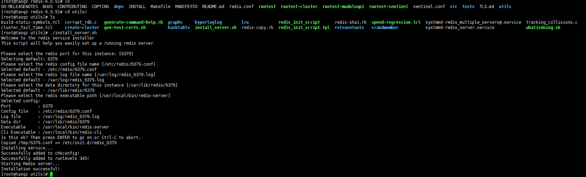

redis下载安装
安装
# 下载安装包
wget https://download.redis.io/releases/redis-6.0.9.tar.gz
# 安装环境
yum install gcc cmake -y
# 安装scl源
yum install centos-release-scl scl-utils-build
# 解压
tar zxvf redis-6.0.9.tar.gz
# 解压后进入目录编译安装
make && make install
# 验证
yum install tcl -y
make test
配置环境变量
# REDIS
export REDIS_HOME=/usr/local/redis
export PATH=$PATH:$REDIS_HOME/bin 或者用src目录
# 重新加载配置文件
source /etc/profile
生成redis服务化管理脚本
# 进入utils目录,生成redis服务化管理脚本
./install_server.sh
运行上面的语句后会出现警告提示语,注释掉./install_server.sh文件中的如下行即可

再使用./install_server.sh命令,选择默认的端口和配置

查看redis服务状态
# 查看端口号6379对应redis实例的运行状态
service redis_6379 status
# 停止端口号6379对应redis实例服务
service redis_6379 stop
# 启动端口号6379对应redis实例服务
service redis_6379 start
配置远程访问
修改启动时使用的配置文件中如下项
bind 127.0.0.1 改为 #bind 127.0.0.1
daemonize no 改为 daemonize yes
protected-mode yes 改为 protected-mode no
博客